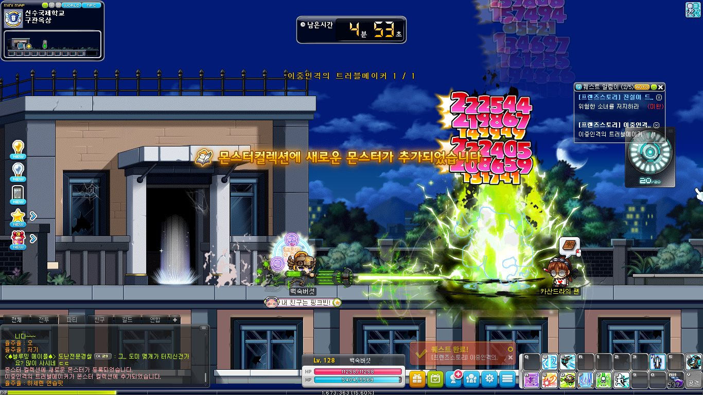
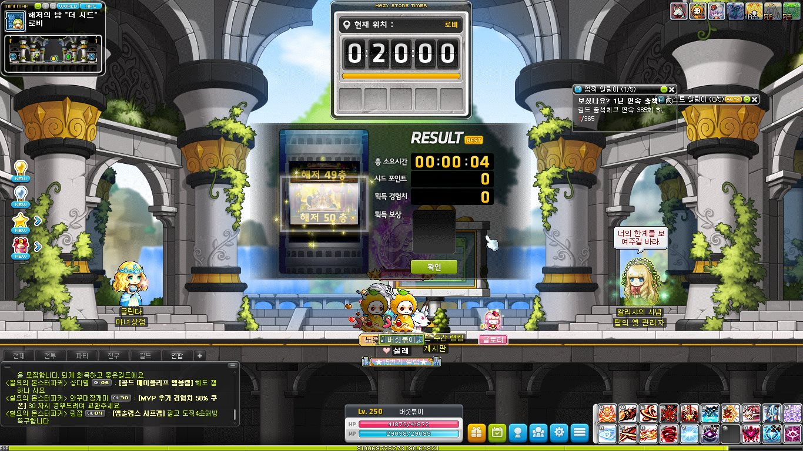
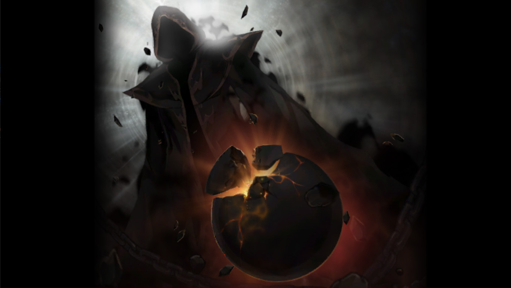

메이플의 중요한 성장 요소 중 하나인 레벨업에 관하여 다룬다. 단순히 "몬스터를 잡는다"에서 그치지 않고 같은 시간에 더 많은 경험치를 얻는 방법과 더 나아가서는 사냥을 하지 않아도 경험치를 올릴 수 있는 다양한 방법에 대하여 다룬다.
일일/주간컨텐츠란?
메이플은 숙제 게임이다
보스를 잡는것을 좋아하는 유저도 트라이 당시에는 재밌게 즐기지만 이것을 1000번 반복한다면 어떨까. 메이플스토리에 컨텐츠가 많은것은 좋은 일이다. 레벨링도 빨라지고, 성장 재화도 많이 주고, 무엇보다 게임을 계속 할 수 있는 원동력이 생기는 것이지만, 이것을 몇일 몇주씩 계속 해줘야 하는것이 메이플을 질리게 하는 원인이다. 하지만 의외로 많은 유저들이 메이플스토리에는 정확히 어떤 일일/주간컨텐츠가 존재하는지에 대해 잘 모르고 있다. 유저들이 많이 즐기는 컨텐츠부터 해서 거의 잊혀진 마이너 컨텐츠까지 같이 작성해보았다.
일일 컨텐츠
흔히 일퀘라고 불리는 것들을 말한다. 일퀘 이야기를 하려면 자주 쓰는 용어가 있는데 바로 레범몬이다. "레벨 범위 몬스터"의 줄임말이며 자신의 레벨 +-20레벨의 몬스터를 말한다. 요즘은 저렴해진 장비 가격으로 인해 잘 하지않는 헤이븐 일퀘, 크리티아스 일퀘나 시간 대비 효율이 안나와서 하지않는 일일 보스 잡기를 제외하면 주로 진행하는 일퀘는 다음과 같다 :
- 아케인/어센틱지역 일일퀘스트
- 몬스터파크
- 데일리기프트 수령(레범몬 300마리)
- 이벤트 출석
이것 외에도 추가로 일일 루틴을 돌리는 일부 유저들이 있는데 하지 않아도 지장없는 컨텐츠이므로 흘려 넘겨도 무방하다 :
- 길드 출석
- 오후 8시에 오르카에게 전화(프렌즈스토리)
- 프렌즈스토리 구관돌이
- 파티퀘스트 순회
- 월드 파티퀘스트
- 더시드 등반
- 기타 등등 악귀행동..

주간 컨텐츠
메이플의 컨텐츠하면 생각나는 대부분이 지금은 주간 컨텐츠로 자리잡고 있다. 대량의 경험치를 주는 에픽 던전이나 메소를 벌 수 있는 주간보스가 주축이 되어 오래전부터 주간컨텐츠 초기화날인 목요일을 "메요일"이라고 부르게 되었다. 일일 컨텐츠랑은 다르게 주간 컨텐츠는 보상도 많이 주고 한번 놓치면 비교적 손실이 크기 때문에 유저들이 숙제를 하는 것과 같이 꾸준히 챙겨서 하려는 경향이 있다.
현재 유저들이 꾸준히 즐기고 챙겨서 하는 주간 컨텐츠는 다음과 같다 :
- 익스트림 몬스터파크
- 에픽 던전
- 주간 보스
- 아즈모스 협곡
- 길드 컨텐츠(수로, 플래그)
- 유니온 코인 주간퀘스트
- 아케인지역 주간 컨텐츠
- 이벤트 출석
그리고 현재는 일부 유저들만 즐기는 주간 컨텐츠도 있다 :
- 더 시드
- 무릉도장
- 고스트파크

월간 컨텐츠
현재 월간 컨텐츠라고 불릴만한 컨텐츠는 검은 마법사 격파정도 밖에 없다. 월간 단위로 초기화되는 MVP등급이나 마일리지샵이 있지만 게임 컨텐츠 측면에서 봤을때는 아직 없다고 볼 수 있다.
